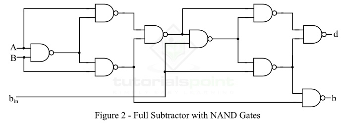
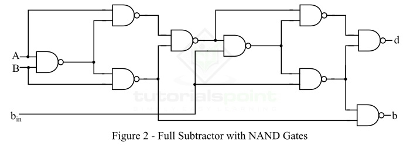

SEQUENTIAL CIRCUITS
The sequential circuit is a special type of circuit that has a series of inputs and outputs. The outputs of the sequential circuits depend on both the combination of present inputs and previous outputs. The previous output is treated as the present state. So, the sequential circuit contains the combinational circuit and its memory storage elements. A sequential circuit doesn't need to always contain a combinational circuit. So, the sequential circuit can contain only the memory element.
In synchronous sequential circuits, synchronization of the memory element's state is done by the clock signal. The output is stored in either flip-flops or latches(memory devices). The synchronization of the outputs is done with either only negative edges of the clock signal or only positive edges.
The clock signals are not used by the Asynchronous sequential circuits. The asynchronous circuit is operated through the pulses. So, the changes in the input can change the state of the circuit. The asynchronous circuits do not use clock pulses. The internal state is changed when the input variable is changed. The un-clocked flip-flops or time-delayed are the memory elements of asynchronous sequential circuits. The asynchronous sequential circuit is similar to the combinational circuits with feedback.

FLIP FLOP
A circuit that has two stable states is treated as a flip flop. These stable states are used to store binary data that can be changed by applying varying inputs. The flip flops are the fundamental building blocks of the digital system. Flip flops and latches are examples of data storage elements. In the sequential logical circuit, the flip flop is the basic storage element. The latches and flip flops are the basic storage elements but different in working.
SR FLIPFLOP
The SR flip flop is a 1-bit memory bistable device having two inputs, i.e., SET and RESET. The SET input 'S' set the device or produce the output 1, and the RESET input 'R' reset the device or produce the output 0. The SET and RESET inputs are labeled as S and R, respectively. The SR flip flop stands for "Set-Reset" flip flop. The reset input is used to get back the flip flop to its original state from the current state with an output 'Q'. This output depends on the set and reset conditions, which is either at the logic level "0" or "1".


JK FLIPFLOP
A full subtractor is a combinational circuit that performs subtraction of two bits, one is minuend and other is subtrahend, taking into account borrow of the previous adjacent lower minuend bit. This circuit has three inputs and two outputs. The three inputs A, B and Bin, denote the minuend, subtrahend, and previous borrow, respectively. The two outputs, D and Bout represent the difference and output borrow, respectively.

 



DECODER
The combinational circuit that change the binary information into 2N output lines is known as Decoders. The binary information is passed in the form of N input lines. The output lines define the 2N-bit code for the binary information. In simple words, the Decoder performs the reverse operation of the Encoder. At a time, only one input line is activated for simplicity. The produced 2N-bit output code is equivalent to the binary information.


ENCODER
The combinational circuits that change the binary information into N output lines are known as Encoders. The binary information is passed in the form of 2N input lines. The output lines define the N-bit code for the binary information. In simple words, the Encoder performs the reverse operation of the Decoder. At a time, only one input line is activated for simplicity. The produced N-bit output code is equivalent to the binary information


DEMULTIPLEXER
A De-multiplexer is a combinational circuit that has only 1 input line and 2N output lines. Simply, the multiplexer is a single-input and multi-output combinational circuit. The information is received from the single input lines and directed to the output line. On the basis of the values of the selection lines, the input will be connected to one of these outputs. De-multiplexer is opposite to the multiplexer.
MULTIPLEXER
A multiplexer is a combinational circuit that has 2n input lines and a single output line. Simply, the multiplexer is a multi-input and single-output combinational circuit. The binary information is received from the input lines and directed to the output line. On the basis of the values of the selection lines, one of these data inputs will be connected to the output. Unlike encoder and decoder, there are n selection lines and 2n input lines. So, there is a total of 2N possible combinations of inputs. A multiplexer is also treated as Mux.


PARITY GENERATOR
It is combinational circuit that accepts an n-1 bit data and generates the additional bit that is to be transmitted with the bit stream. This additional or extra bit is called as a Parity Bit. In even parity bit scheme, the parity bit is ‘0’ if there are even number of 1s in the data stream and the parity bit is ‘1’ if there are odd number of 1s in the data stream. In odd parity bit scheme, the parity bit is ‘1’ if there are even number of 1s in the data stream and the parity bit is ‘0’ if there are odd number of 1s in the data stream. Let us discuss both even and odd parity generators.


PARITY CHECKER
It is a logic circuit that checks for possible errors in the transmission. This circuit can be an even parity checker or odd parity checker depending on the type of parity generated at the transmission end. When this circuit is used as even parity checker, the number of input bits must always be even.